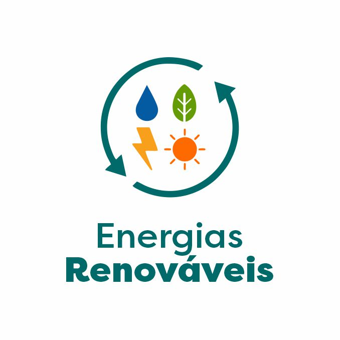

Especialista em Energias Renováveis
O que é um Especialista em Energias Renováveis?
Um especialista em energias renováveis é um profissional que se dedica ao desenvolvimento, implementação e gerenciamento de tecnologias e sistemas que utilizam fontes de energia renováveis. Essas fontes incluem energia solar, eólica, hidrelétrica, biomassa, geotérmica e marinha. O objetivo principal desse especialista é promover a utilização de fontes de energia que são sustentáveis e menos prejudiciais ao meio ambiente, contribuindo para a redução das emissões de gases de efeito estufa e a dependência de combustíveis fósseis.Aqui estão algumas das responsabilidades e funções típicas de um especialista em energias renováveis:
- Pesquisa e Desenvolvimento: Investigar novas tecnologias e soluções para melhorar a eficiência e a viabilidade das energias renováveis. Isso pode incluir o desenvolvimento de novos materiais, sistemas ou métodos de conversão de energia.
- Planejamento e Projeto: Projetar e planejar sistemas de geração de energia renovável, como painéis solares, turbinas eólicas e usinas hidrelétricas. Isso envolve o dimensionamento dos sistemas, análise de viabilidade e consideração das condições locais.
- Implementação e Instalação: Supervisionar e coordenar a instalação de equipamentos e sistemas de energia renovável. Garantir que os projetos sejam executados conforme o planejamento e em conformidade com os regulamentos e normas técnicas.
- Manutenção e Monitoramento: Monitorar o desempenho dos sistemas de energia renovável e realizar manutenção para garantir que operem de forma eficiente e segura ao longo do tempo.
- Análise de Impacto: Avaliar o impacto ambiental e econômico dos projetos de energia renovável. Isso pode incluir análise de ciclo de vida, impacto sobre a biodiversidade e benefícios econômicos para as comunidades locais.
- Consultoria e Assessoria: Oferecer consultoria a empresas, governos e organizações sobre como integrar energias renováveis em suas operações ou políticas. Isso pode incluir análise de viabilidade financeira, estudos de impacto e recomendações de políticas.
- Regulamentação e Conformidade: Garantir que os projetos e operações estejam em conformidade com as leis, regulamentos e padrões da indústria relacionados às energias renováveis.
- Financiamento e Economia: Avaliar e buscar oportunidades de financiamento para projetos de energia renovável, incluindo subsídios, incentivos fiscais e investimentos privados. Analisar a viabilidade econômica dos projetos e o retorno sobre investimento.
- Inovação e Tendências: Manter-se atualizado com as últimas inovações e tendências na área de energias renováveis para aplicar as melhores práticas e tecnologias emergentes.
Para ser bem-sucedido, um especialista em energias renováveis deve ter um sólido conhecimento técnico das diferentes tecnologias de energia renovável, habilidades em gerenciamento de projetos, e uma compreensão das questões ambientais e regulatórias associadas à energia. Formação acadêmica em áreas como engenharia, ciência ambiental, ou tecnologia de energia, além de experiência prática, são fundamentais para essa profissão.
O que se estuda um Especialista em Energias Renováveis?
Um especialista em energias renováveis estuda uma ampla gama de tópicos para entender, projetar, implementar e gerenciar tecnologias que aproveitam fontes de energia sustentáveis. A formação pode variar, mas geralmente inclui uma combinação de conhecimentos técnicos, científicos e de gestão. Aqui estão algumas das principais áreas de estudo:
- Tipos de Fontes de Energia Renovável: Estudo das diferentes fontes de energia, como solar, eólica, hidrelétrica, biomassa, geotérmica e marinha.
- Tecnologias e Sistemas: Funcionamento e características de tecnologias específicas, como painéis solares fotovoltaicos, turbinas eólicas e sistemas de biomassa.
- Engenharia de Sistemas de Energia: Projetos e sistemas de geração de energia, incluindo dimensionamento, integração e otimização de equipamentos.
- Tecnologia de Conversão de Energia: Métodos para converter energia renovável em eletricidade ou calor, incluindo inversores e controladores.
- Impacto Ambiental: Análise dos impactos das tecnologias de energia renovável no meio ambiente, incluindo biodiversidade e uso da terra.
- Sustentabilidade: Princípios e práticas para garantir que as soluções energéticas sejam ambientalmente e economicamente sustentáveis.
- Gestão de Projetos: Planejamento, execução e controle de projetos de energia renovável, incluindo cronogramas, orçamento e recursos.
- Economia da Energia: Análise de custos e benefícios dos projetos, incluindo viabilidade financeira, retorno sobre investimento e análise de risco.
- Legislação e Regulamentação: Conhecimento das leis e regulamentações relacionadas às energias renováveis, incluindo incentivos fiscais e subsídios.
- Políticas Energéticas: Estudo das políticas governamentais e estratégias para promover o uso de energias renováveis.
- Análise de Dados: Uso de ferramentas e técnicas para monitorar e avaliar o desempenho dos sistemas de energia renovável.
- Manutenção e Diagnóstico: Procedimentos para garantir que os sistemas estejam operando eficientemente e como identificar e resolver problemas técnicos.
- Inovação Tecnológica: Pesquisa e desenvolvimento de novas tecnologias e melhorias nas existentes.
- Tendências Emergentes: Estudo das tendências atuais e futuras no campo das energias renováveis, como novas fontes de energia ou avanços em eficiência.
- Comunicação e Educação: Habilidades para educar e informar o público e stakeholders sobre os benefícios e funcionamento das energias renováveis.
Fundamentos das Energias Renováveis:
Engenharia e Tecnologias:
Ciência Ambiental e Sustentabilidade:
Gestão e Economia de Projetos:
Regulamentação e Políticas
Análise e Monitoramento:
Desenvolvimento e Inovação:
Educação e Sensibilização:
Além da formação acadêmica, a experiência prática através de estágios, projetos de pesquisa e trabalhos em campo são essenciais para ganhar conhecimento e habilidades aplicáveis.
Quais são as áreas de atuação de um Especialista em Energias Renováveis?
Um especialista em energias renováveis pode atuar em diversas áreas, refletindo a variedade de tecnologias e aplicações dentro desse setor. Aqui estão algumas das principais áreas de atuação:
- Inovação Tecnológica: Desenvolvimento de novas tecnologias e aprimoramento das existentes, como novos tipos de painéis solares ou turbinas eólicas.
- Eficiência Energética: Pesquisa para melhorar a eficiência de conversão e armazenamento de energia renovável.
Pesquisa e Desenvolvimento (P&D):
- Design de Sistemas: Projetar e dimensionar sistemas de geração de energia renovável, como usinas solares, parques eólicos e sistemas de biomassa.
- Integração de Sistemas: Planejar a integração de sistemas de energia renovável com a rede elétrica ou sistemas de armazenamento de energia.
Projeto e Engenharia:
- Instalação de Equipamentos: Supervisionar ou realizar a instalação de equipamentos e sistemas de energia renovável, como painéis solares e turbinas eólicas.
- Manutenção e Operação: Monitorar e manter o funcionamento de sistemas de energia renovável para garantir eficiência e longevidade
Instalação e Manutenção:
- Consultoria e Assessoria:
- Consultoria Técnica: Fornecer consultoria a empresas, governos e organizações sobre a implementação e otimização de soluções de energia renovável.
- Análise de Viabilidade: Realizar estudos de viabilidade técnica e econômica para novos projetos de energia renovável.
- Planejamento e Coordenação: Gerenciar projetos de energia renovável desde a concepção até a execução, incluindo cronogramas, orçamentos e coordenação de equipes.
- Controle de Qualidade: Garantir que os projetos atendam aos padrões e regulamentos de qualidade e segurança.
Gestão de Projetos:
- Formação e Capacitação: Desenvolver e ministrar cursos e treinamentos sobre tecnologias e práticas de energia renovável para profissionais e o público em geral.
- Sensibilização: Promover a conscientização sobre a importância e os benefícios das energias renováveis.
Educação e Treinamento:
- Conformidade Regulatória: Garantir que projetos e operações estejam em conformidade com as leis e regulamentos locais e internacionais.
- Desenvolvimento de Políticas: Contribuir para o desenvolvimento de políticas públicas e incentivos para a promoção das energias renováveis.
Regulamentação e Políticas:
- Monitoramento de Desempenho: Utilizar ferramentas analíticas para monitorar o desempenho de sistemas de energia renovável e identificar áreas para melhorias.
- Análise de Dados: Avaliar dados operacionais para otimizar a eficiência e o retorno sobre investimento dos projetos.
Análise e Monitoramento:
- Avaliação de Impacto Ambiental: Analisar e mitigar os impactos ambientais dos projetos de energia renovável.
- Sustentabilidade: Trabalhar para garantir que os projetos de energia renovável contribuam para a sustentabilidade e o desenvolvimento ambiental.
Consultoria Ambiental:
- Análise Econômica: Avaliar a viabilidade financeira de projetos de energia renovável, incluindo custos, retornos e análise de risco.
- Procura de Financiamento: Identificar e buscar fontes de financiamento, como subsídios, incentivos fiscais e investimentos privados.
Financiamento e Economia:
Essas áreas podem sobrepor-se e interagir, e um especialista pode se especializar em uma ou mais delas, dependendo de suas habilidades, interesses e oportunidades de carreira. A formação contínua e a adaptação às novas tecnologias e tendências são essenciais para se manter atualizado e competitivo no campo das energias renováveis.
Olá! Queremos proporcionar a melhor experiência possível em nosso site. Se você tiver sugestões para torná-lo mais agradável e útil, por favor, envie-nos um e-mail para Aghamenon Toberlock Estudos. Estamos ansiosos para ouvir suas ideias e melhorar nosso site juntos!